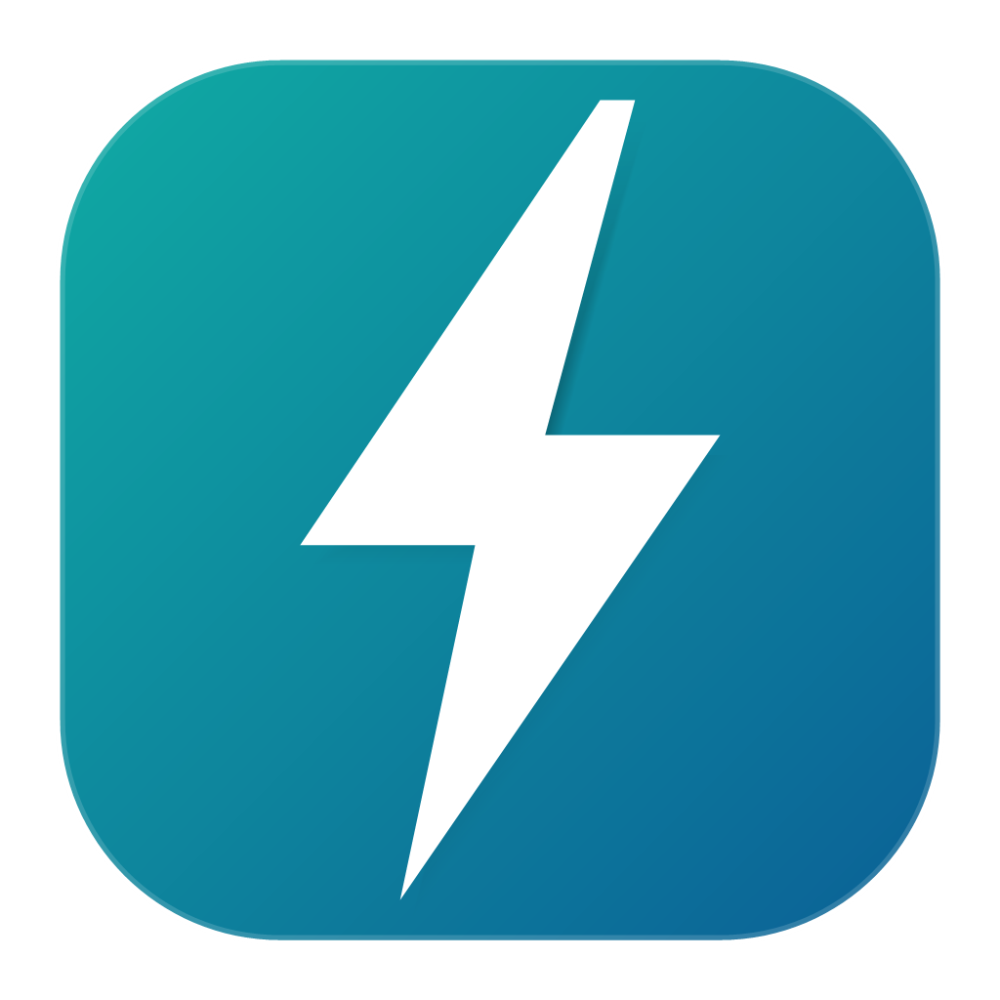

Test, lecture et configuration des déclencheurs Schneider Micrologic (MasterPacT MTZ, NW·NT et Compact NSX). v1.0.3
Pour une Micrologic X en USB direct sur Mac, installez d'abord
libusb : brew install libusb (inutile avec la valise Service Interface LV485500).
Le poste doit être habilité par Geswork au premier lancement. Le logiciel est un outil d'assistance fourni « en l'état » : l'utilisateur reste seul responsable de son utilisation et doit vérifier l'exactitude des informations. CGU consultables dans l'application.